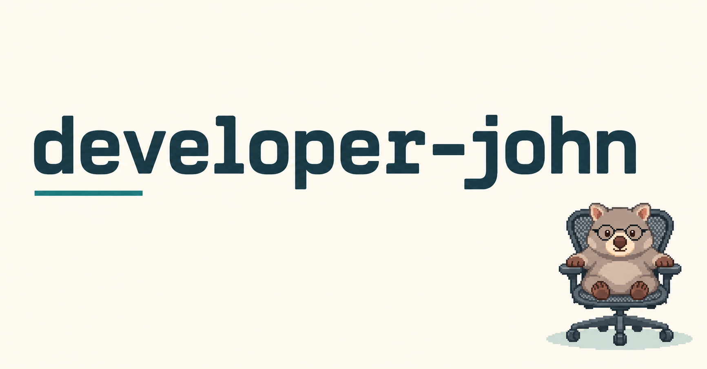
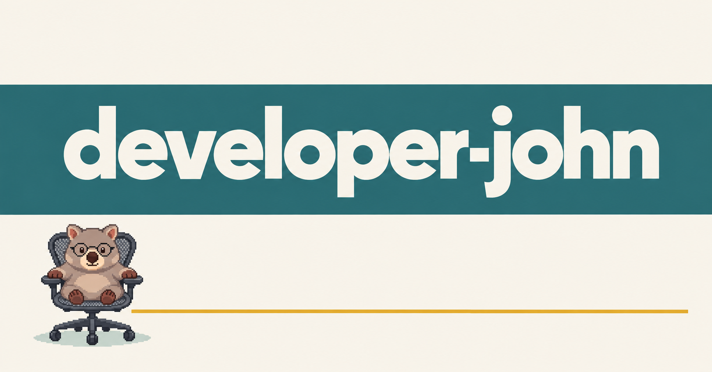
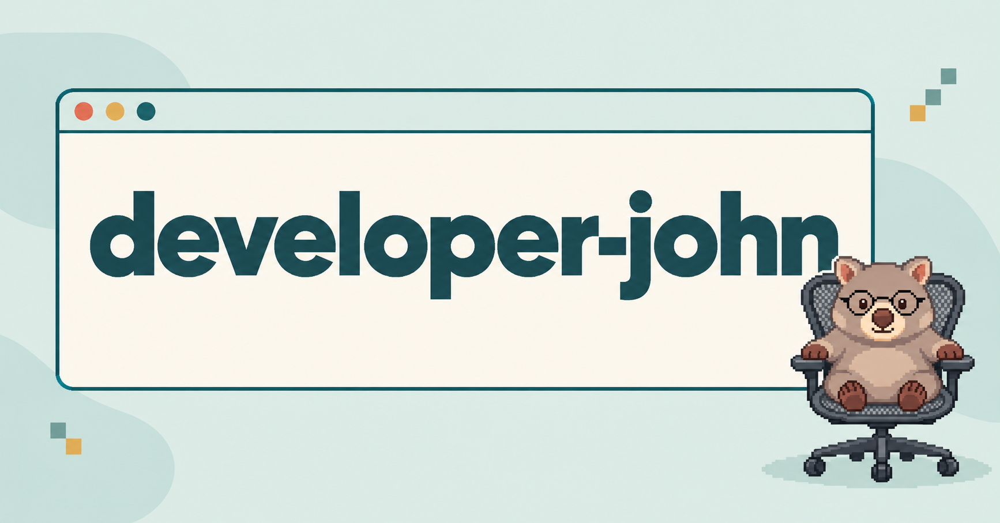
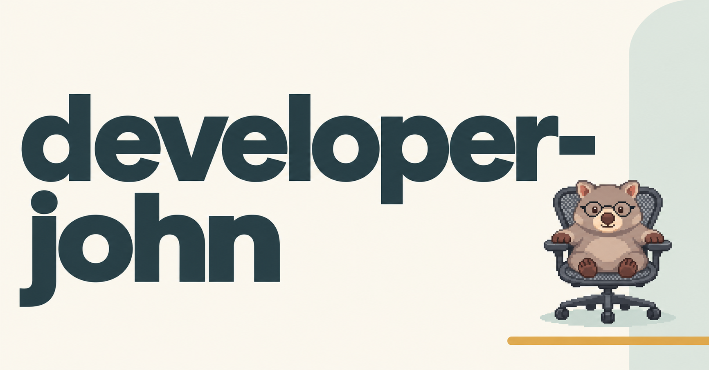
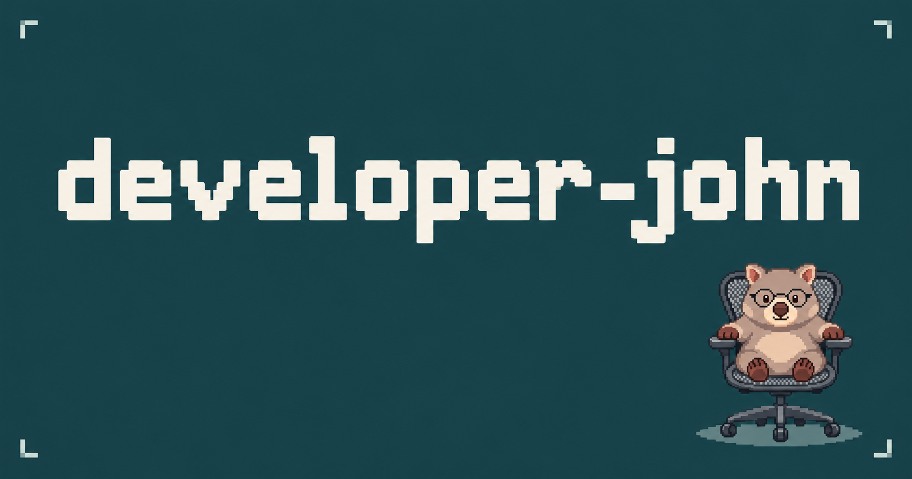
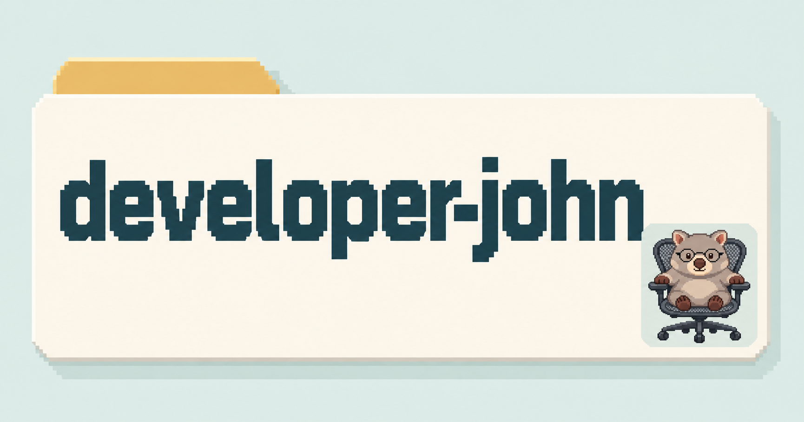
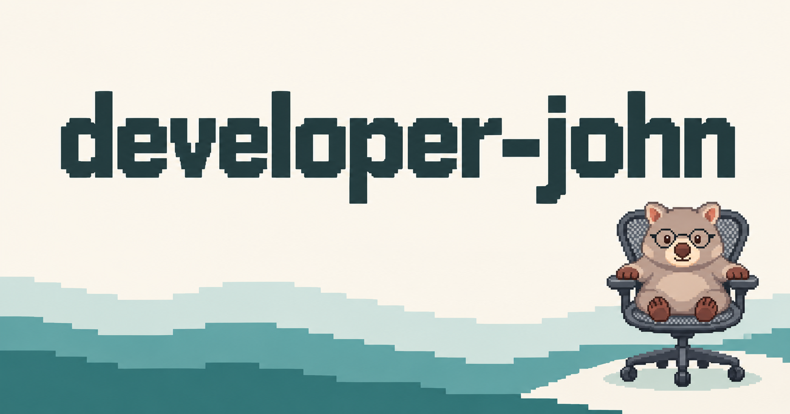
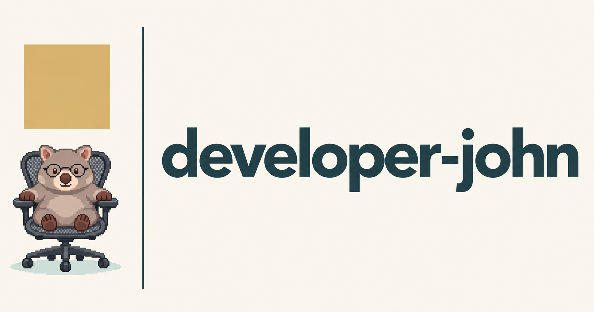
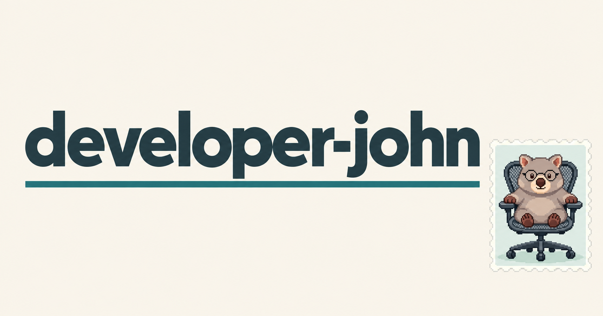
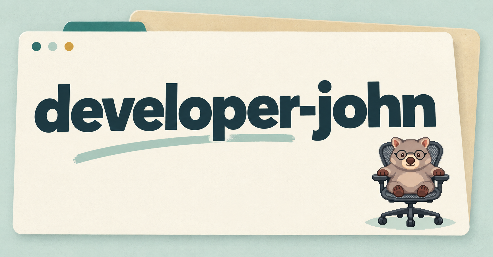

작은 서명
크림색 여백과 오른쪽 아래 작은 웜뱃.

JOHN’S SPACE / SMALL WOMBAT STUDIES
사이트 이름은 크게, 웜뱃은 작은 포인트로 배치한 공유 이미지입니다.
작은 미리보기로 먼저 살펴보고, 이미지를 눌러 전체 그림을 확인하세요. 확대 화면에서 이전·다음 버튼이나 좌우 방향키로 시안을 바꿀 수 있습니다.
크림색 여백과 오른쪽 아래 작은 웜뱃.

넓은 청록색 띠와 이름 중심 구성.

브라우저 프레임과 모서리의 캐릭터.

큰 두 줄 타이포와 작은 캐릭터.

짙은 청록색과 밝은 글자 대비.

폴더 형태를 활용한 이름표.

낮은 바다색 띠와 차분한 여백.

가는 선과 단정한 편집 디자인.

작은 캐릭터 우표를 붙인 구성.

겹쳐진 종이 카드와 작은 웜뱃.
